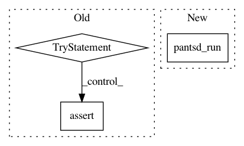

1148b07af07456d7e0495f4613803cb34993d689,tests/python/pants_test/pantsd/test_pantsd_integration.py,TestPantsDaemonIntegration,test_pantsd_run,#TestPantsDaemonIntegration#,85
Before Change
// Explicitly kill any running pantsd instances for the current buildroot.
print("\nkill-pantsd")
self.assert_success(self.run_pants_with_workdir(["kill-pantsd"], workdir, pantsd_config))
try:
// Start pantsd implicitly via a throwaway invocation.
print("help")
self.assert_success(self.run_pants_with_workdir(["help"], workdir, pantsd_config))
checker.await_pantsd()
print("list 3rdparty:")
self.assert_success(self.run_pants_with_workdir(["list", "3rdparty:"],
workdir,
pantsd_config))
checker.assert_running()
print("list :")
self.assert_success(self.run_pants_with_workdir(["list", ":"],
workdir,
pantsd_config))
checker.assert_running()
print("list ::")
self.assert_success(self.run_pants_with_workdir(["list", "::"],
workdir,
pantsd_config))
checker.assert_running()
// And again using the cached BuildGraph.
print("list ::")
self.assert_success(self.run_pants_with_workdir(["list", "::"],
workdir,
pantsd_config))
checker.assert_running()
finally:
try:
for line in read_pantsd_log(workdir):
print(line)
finally:
// Explicitly kill pantsd (from a pantsd-launched runner).
print("kill-pantsd")
self.assert_success(self.run_pants_with_workdir(["kill-pantsd"], workdir, pantsd_config))
checker.assert_stopped()
// Assert there were no warnings or errors thrown in the pantsd log.
for line in read_pantsd_log(workdir):
// Ignore deprecation warning emissions.
if "DeprecationWarning" in line:
continue
After Change
pantsd_run(["list", "3rdparty:"])
checker.await_pantsd()
pantsd_run(["list", ":"])
checker.assert_running()
pantsd_run(["list", "::"])
checker.assert_running()
In pattern: SUPERPATTERN
Frequency: 3
Non-data size: 3
Instances
Project Name: pantsbuild/pants
Commit Name: 1148b07af07456d7e0495f4613803cb34993d689
Time: 2017-11-04
Author: kwlzn@users.noreply.github.com
File Name: tests/python/pants_test/pantsd/test_pantsd_integration.py
Class Name: TestPantsDaemonIntegration
Method Name: test_pantsd_run
Project Name: pantsbuild/pants
Commit Name: 1148b07af07456d7e0495f4613803cb34993d689
Time: 2017-11-04
Author: kwlzn@users.noreply.github.com
File Name: tests/python/pants_test/pantsd/test_pantsd_integration.py
Class Name: TestPantsDaemonIntegration
Method Name: test_pantsd_compile
Project Name: pantsbuild/pants
Commit Name: 1148b07af07456d7e0495f4613803cb34993d689
Time: 2017-11-04
Author: kwlzn@users.noreply.github.com
File Name: tests/python/pants_test/pantsd/test_pantsd_integration.py
Class Name: TestPantsDaemonIntegration
Method Name: test_pantsd_stacktrace_dump